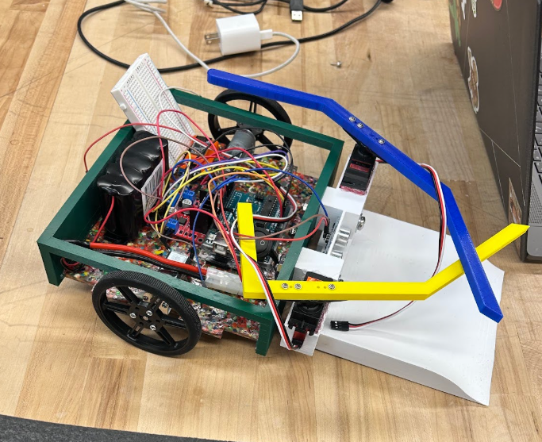
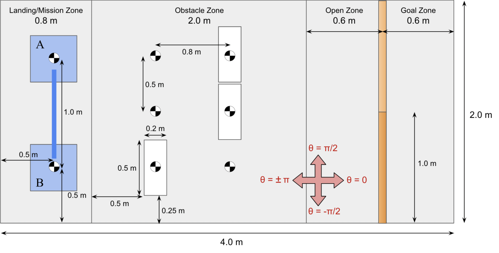
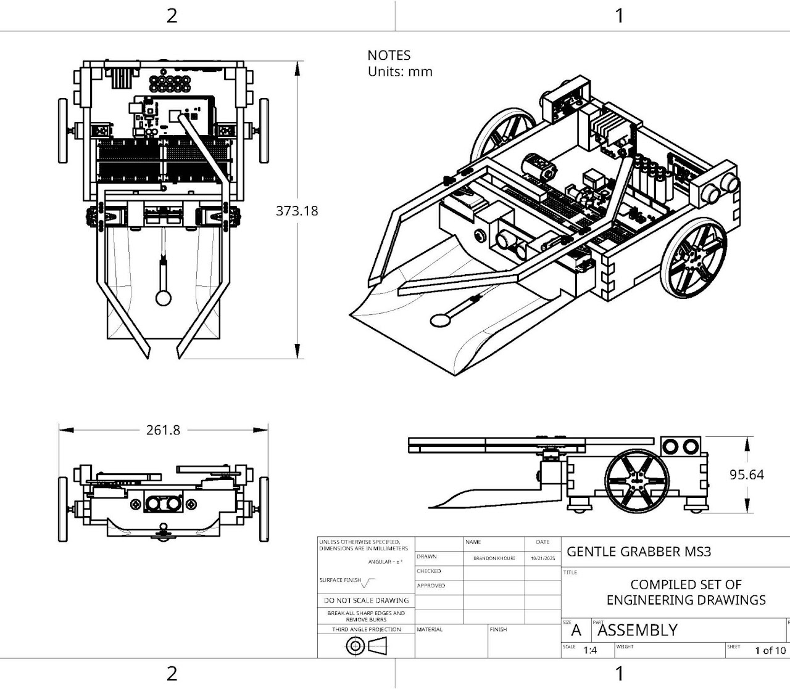
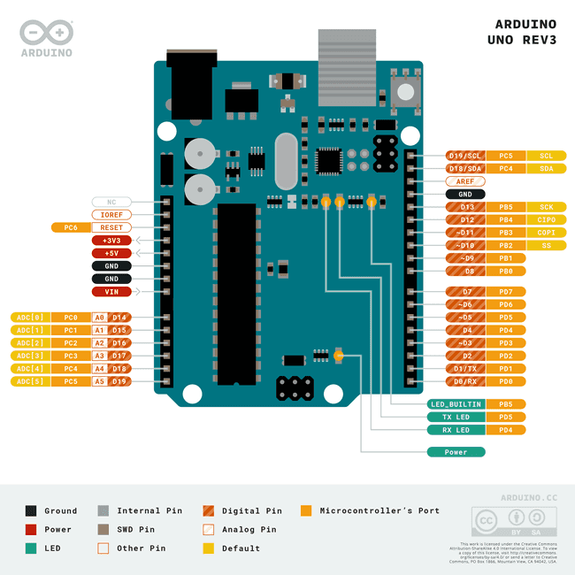
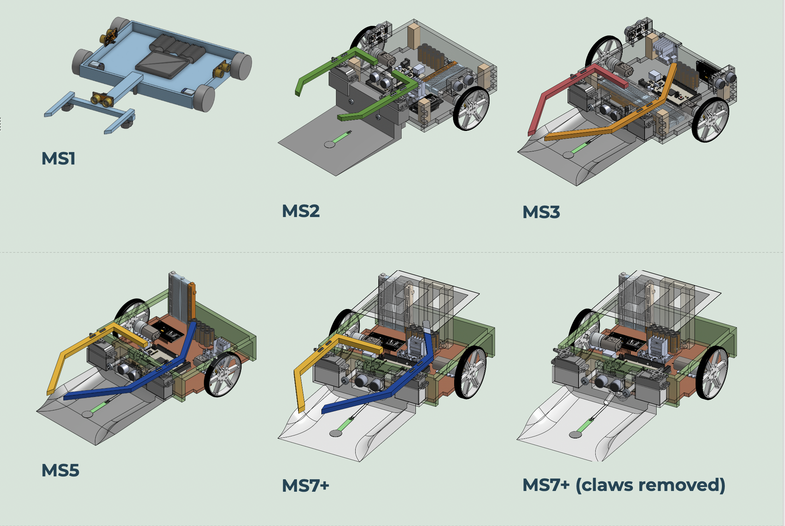
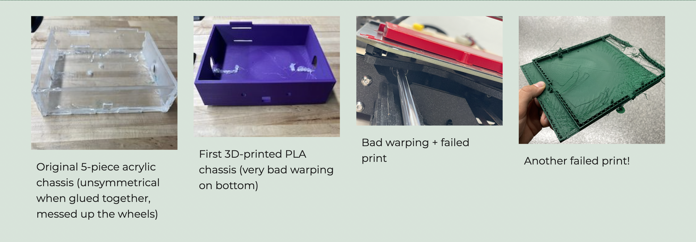

Arduino Rover
An Arduino-controlled vehicle designed to pick up a block, weigh it and navigate an obstacle course.

Completed rover
Objective
The task
The rover needed to autonomously locate, pick up, weigh, and determine the material of the block. Once picked up, the rover had to determine and display on a external screen the weight (i.e., light, medium, or heavy), and substance (i.e., foam or plastic) of the block. Then, the vehicle had to autonomously navigate an obstacle course and finally go over or under the finish line. Additionally, the design of the rover was subject to strict mass and price limits, along with restrictions about where certain parts could be purchased from.

Map of Arena
System Design
How the system was structured
The rover combined a mobile base with a linear actuator for the pickup mechanism, driven by motors and monitored with sensors, all controlled through an Arduino Uno. It also utilized a wifi module to connect to an overhead camera that scanned an Aruco marker which was taped on the top of the rover to track its movement.
Mechanical Design
Mechanical components
The mechanical aspects of the rover included the wheels, chassis, ramp, and the linear actuator mechanism used to pick up the block. Designing this system meant accounting for concepts like torque, RPM, friction, and force to make sure the motors and mechanism could actually move and lift the block reliably while also being mobile enough to navigate the course.
For this part of the design project I was specifically responsible for assembling and creating the parts needed for the chassis and ramp part of the rover. I modeled the base of the vehicle and laser cut it out of recycled PLA. I also 3D printed the walls and attached them to the base with glue and screws.


Electronics
Sensors & wiring
The rover used sensors alongside the Arduino Uno and motors to support the pickup, weighing, and material identification tasks. I heavily relied on ultrasonic sensors for most of the rover tasks, using them to determine the object's material by integrating the fact that the foam block absorbed more sound waves than the plastic. This difference was calculated and written into the code for the Arduino to print out the material it was seeing based on the reading from the ultrasonic sensor. Additionally, the ultrasonic sensors were used in general navigation code to get around the obstacles. The rover also utilized one piezo sensor on the bottom of the ramp to weigh the mass of the block. Lastly, linear actuators were used to move arms that held the block in place so there could be a consistent reading of its mass and material. All of these components were wired and coded directly through the Arduino.
At this point in the design, I worked on the ultrasonic sensors, specifically determining and coding the difference in readings between the plastic and foam blocks. I also worked on wiring the ultrasonic sensors into the Arduino and making sure they were mounted correctly on the vehicle to get accurate readings.

Wiring / electronics layout
Testing
Putting it through its paces
The model rover was tested numerous times, resulting in changes to the CAD models changed over time. The first major change was with the 3D printed arms that held the block in place. When testing with the original arms, the block was not close enough to the ultrasonic sensors and the arms did not consistently get the block in the same place. To address this, the arm design was adjusted by offsetting the heights and lengths. The obstacle navigation code was tested continuously on the actual arena and adjusted it after every test run. The hours of testing each component led to prospective addressing of any errors on the final design and ultimately a successful test of the rover.

Design changes over time
Problems & Iterations
What went wrong, and what changed
- During the testing the Arduino kept overheating. The day before the final run-through, the Arduino burnt out for no aparent reason. Eventually, it was determined that the kill switch was poorly wired, causing a constant flow of current into the Arduino. After solving this issue, there was little time to further test and refine final code. However, despite this major issue, the rover still had several successful run-throughs of the course.
- The chassis was the most iterated part of the rover, with four different attempts at a design before landing on the final model. The first idea was to use laser-cut acrylic for the chassis because it was strong and easy to put together. The issue was that the rover became too heavy and its motors couldn't fit through the precut holes. The second attempt utilized a fully 3D printed model to make it light while still having internal strength. However, the available 3D printers couldn't print the long, flat bottom without warping it in some way, resulting in the prints being unusable. The final design involved connecting a laser-cut PLA bottom with 3D printed side walls. This strategy worked because the chassis relied less on 3D printing and contained the optimal strength while also not being too heavy.
- Unfortunately, the motors for the rover were not ideal as they were too strong and had too much torque for what the vehicle needed, and required many strategies to accommodate. As a result, the project shifted to utilizing pulse-width modulation in the code to monitor the output torque to what it needed it to be.

Chassis iterations
Final Result
How it performed
During the final runs, the rover was able to complete 5/6 mission tasks cumulatively, reieving the second highest score in the class section. Additionally, the rover was nominated for the course-wide "Best Constructed" award, which was given to the vehicle that had the best and most creative and organized construction.
Lessons Learned
Takeaways
This project was a good introduction to how mechanical design, electronics, and code all have to work together. What might look fine on paper still has to deal with real friction, real motor limits, and real wiring. I also got experience with what it's like to be a part of an engineering team working on a real project. I learned what it's like to delegate tasks along with completing my own by a strict deadline. Overall, this project was my first introduction to the engineering world and taught me a lot about how real engineers problem-solve and work together to achieve their goals.